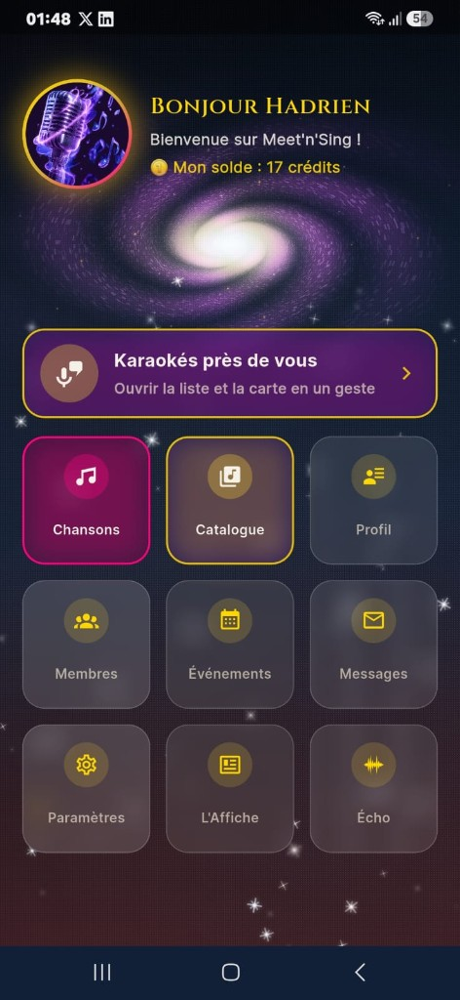
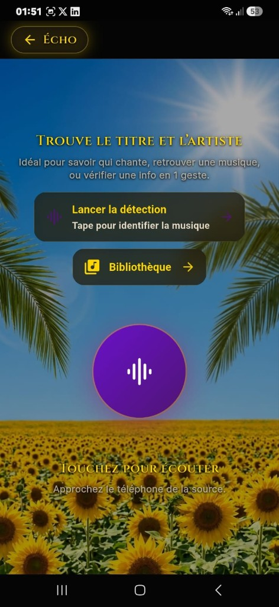
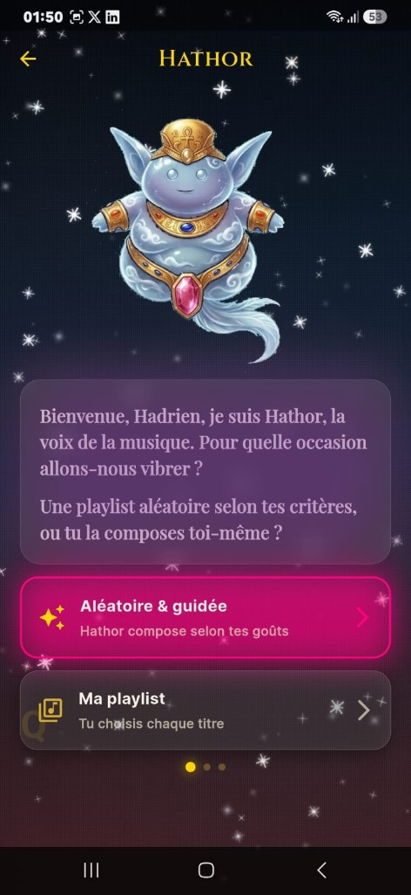
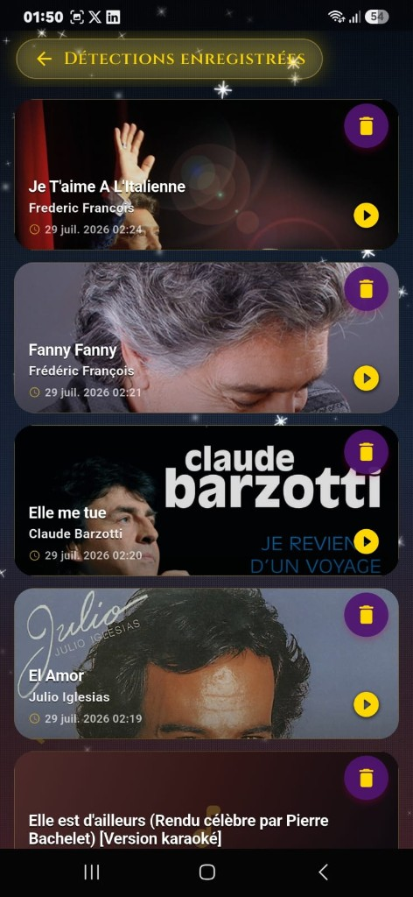
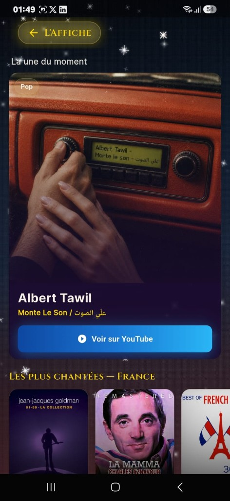
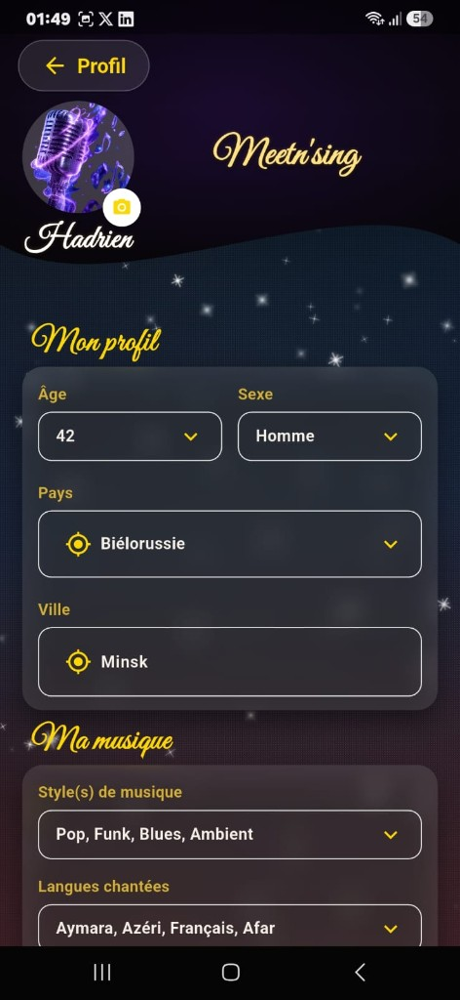
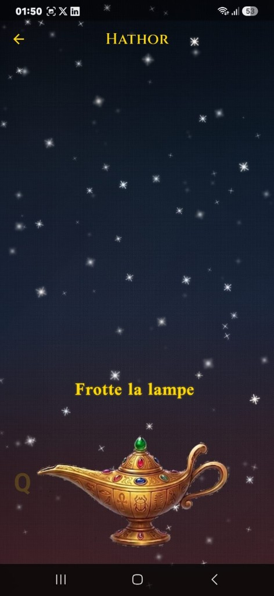

← Travaux · Application mobile
Meet'n'Sing
App sociale autour de la musique et du karaoké — conçue et développée en Flutter, de l'idée à l'interface que tu vois ici.

Captures
Un produit complet






Ce que fait l'app (en clair)
Meet'n'Sing, c'est une application mobile multifonction pour les amateurs de chant et de karaoké : trouver des lieux près de chez soi, découvrir des titres, échanger avec d'autres membres, organiser des événements, et même reconnaître une musique qui passe à la radio.
Tout est pensé pour tenir sur un téléphone : interface soignée, plusieurs langues, compte sécurisé, notifications, messagerie entre membres.
Ce que j'ai construit
- Tableau de bord — navigation vers tous les modules (profil, karaokés, chansons, messages…)
- Karaokés sur carte — repérage des bars et salles (Google Maps ou Yandex selon le pays)
- Catalogue local — milliers de titres consultables hors ligne sur le téléphone
- Écho — enregistre un extrait audio et retrouve le morceau
- L'Affiche — page découverte avec les hits et nouveautés par pays
- Social — profils, filtres membres, chat, événements, crédits de contact
- Hathor — expérience narrative pour composer des playlists
Sous le capot (version courte)
Développée en Flutter (Android & iOS), avec Firebase pour les comptes, la base de données, le stockage fichiers et les notifications. Backend cloud pour la reconnaissance musicale et la mise à jour des tendances. Interface traduite en français, anglais et russe.
Projet abouti sur plusieurs mois — architecture modulaire, des dizaines de services métier, polish visuel (thèmes, animations, assets sur mesure).
← Retour aux travaux